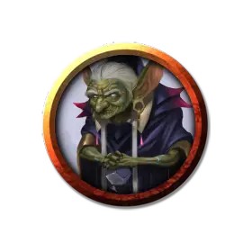

Бол'бара
Bol'bara
Маленький Гуманоид (Гоблиноид), хаотично-добрый, именной НИП

Класс Доспеха 15 (с доспехами мага)
Хиты 40 (9к6 + 9)
Скорость 30 футов
| мод | спас | ||
|---|---|---|---|
| СИЛ | 11 | +0 | +0 |
| ЛОВ | 14 | +2 | +2 |
| ТЕЛ | 12 | +1 | +1 |
| мод | спас | ||
|---|---|---|---|
| ИНТ | 10 | +0 | +0 |
| МДР | 13 | +1 | +1 |
| ХАР | 14 | +2 | +2 |
Чувства тёмное зрение 60 футов, пассивное Восприятие 11
Языки Общий, Гоблинский
Опасность 3 (700 опыта)
Бонус мастерства +2
Особенности
Благословение Тёмного. Когда Бол'бара уменьшает количество хитов враждебного существа до 0, она получает 6 временных хитов.
Ловкий побег. Бол'бара может в каждом своем ходу бонусным действием совершать действие Засада или Отход.
Врождённое колдовство. Заклинательной характеристикой Бол'бара является Харизма (Сл спасброска от заклинаний 12, +4 к попаданию заклинаниями). Бол'бара может накладывать следующие заклинания без использования материальных компонентов:
• Неограниченно: мистический заряд [eldritch blast], псевдожизнь [false life], доспехи мага [mage armor], волшебная рука [mage hand];
• 1/день: очарование личности [charm person], сглаз [hex], удержание личности [hold person], невидимость [invisibility].
Действия
Мультиатака. Бол'бара совершает две рукопашные атаки.
Кинжал. . Рукопашная или дальнобойная атака оружием: +4 к попаданию, досягаемость 5 футов или дистанция 20/60 футов, одна цель. Попадание: 4 (1к4 + 2) колющего урона.
Мистический заряд (Заговор). . Дальнобойная атака заклинанием: +4 к попаданию, дистанция 120 футов, одно существо. Попадание: 7 (1к10 + 2) урона силовым полем.
Легендарные действия
Бол'бара может совершать 2 легендарных действия, выбирая из указанных ниже вариантов. Лишь одно легендарное действие может быть совершено за раз, и только в конце хода другого существа. Бол'бара восстанавливает истраченные действия в начале своего хода.
• Бестелесный рывок. Бол'бара ускоряется. Она может перемещаться сквозь других существ и предметы, как если бы они были труднопроходимой местностью. Она получает 5 (1к10) урона силовым полем, если оканчивает ход внутри предмета.
• Зона Бедствия (стоит 2 действия). Сфера магического хаоса, радиусом 15 футов, простирается из точки, которую Бол'бара может видеть в пределах 60 футов от себя, огибая углы. Каждое существо, начинающее свой ход в этой области, считается целью заклинания смятение [confusion] (Сл спасброска 12). Сфера существует до тех пор, пока Бол'бара сохраняет концентрацию, вплоть до 1 минуты (как если бы она концентрировалась на заклинании).